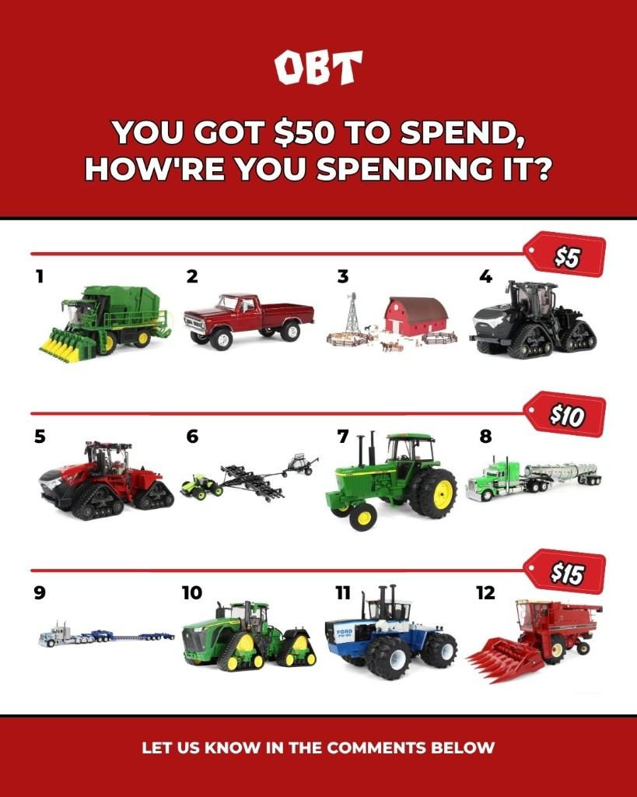

Retail social rarely fails for lack of posting—it fails when everything looks like an ad. Outback Toys already had deep community trust and incredible product stories; month one was about surfacing those stories on a steady rhythm so the algorithm (and real humans) could recognize the pattern.
What we locked before day one
We aligned on three pillars: new arrivals & drops, farm culture & hobbyists, and behind-the-scenes at the shop. Each pillar had example shots and caption angles so the team could batch content without reinventing tone every week.
Cadence that fits operations
Rather than chasing daily posts, we matched frequency to what staff could photograph during real shifts. Short-form reels used existing lighting on the floor; carousels reused packaging art we already had on hand. Sustainable beats noisy.

What we watched in week three and four
Early metrics pointed to saves and shares on collectible reveals—not generic lifestyle shots. We shifted weight toward drop previews and limited-run announcements while keeping community humor in stories. That adjustment is normal: month one is as much listening as broadcasting.
See more of this brand in our Outback Toys case study or talk social strategy on a discovery call.